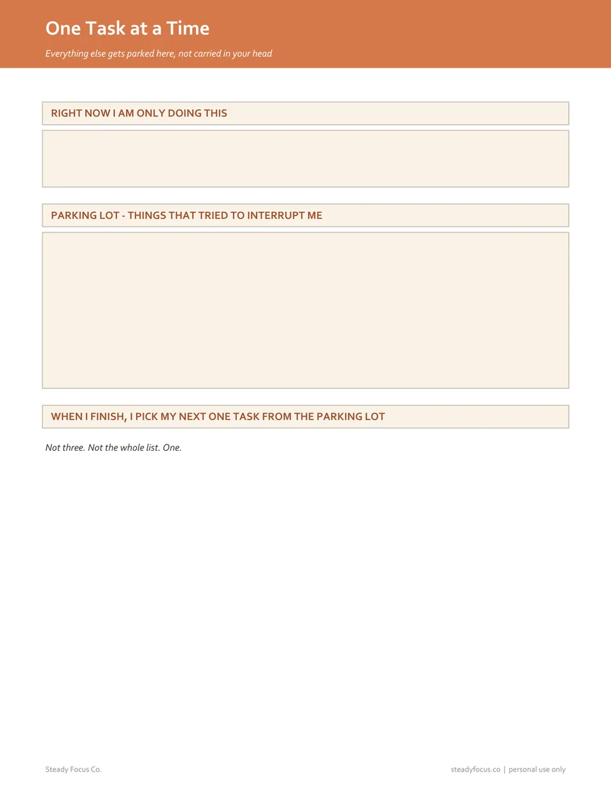
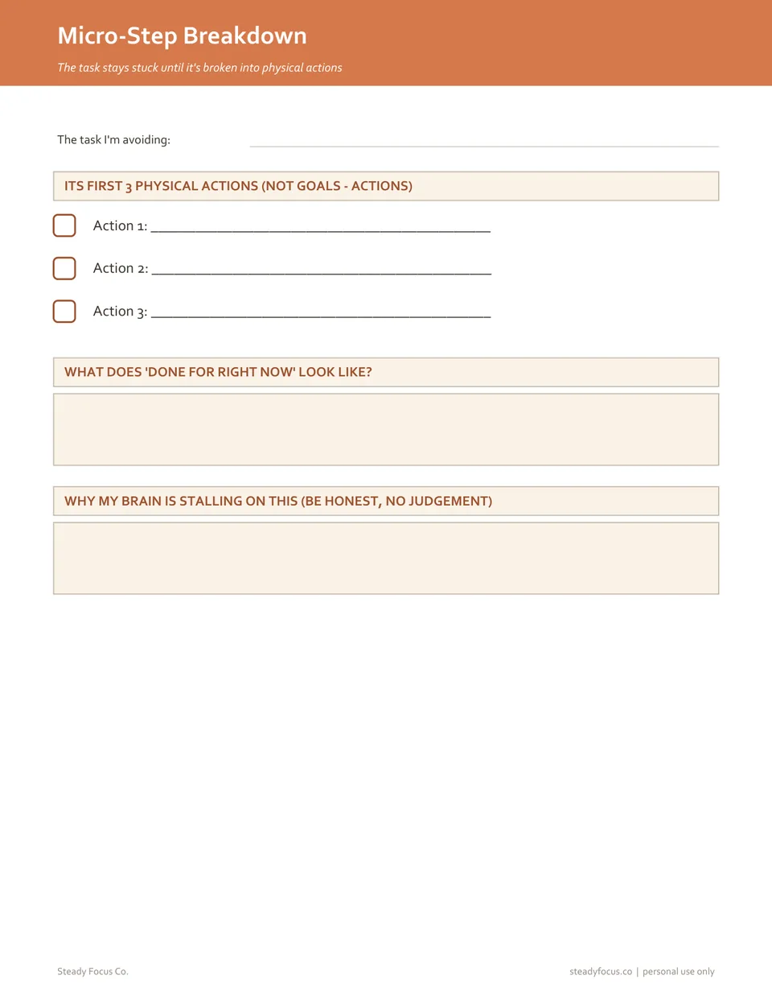

Printable task-starting pages · instant PDF
Your to-do list isn't missing tasks. It's missing the first move.


Secure checkout on WhopDownload right after paying$7 once, no subscription
Four printable pages that only ask two things: what is the first thing your hands do, and can you give it five minutes?
The task is on the list. You still haven't started.
People who use to-do apps describe the same wall. The list holds the goal. Nothing on it tells you how to begin.
Standard to-do lists typically fail people with ADHD because they list what needs to be done without addressing how to start.
If I dont do them strictly in the same exact order daily...then they all get completely out of order!!! And then itll be super confusing.
I very much appreciate the breakdown tasks function.
These are public reviews and articles about other products, quoted word for word and linked so you can check them. We have no customer reviews of our own to show yet.
A goal, or a first move
Your to-do list says
A goal. Your brain looks at it, finds nothing to grab, and the task waits another hour.
The Micro-Step page says
The first three things your hands do, and five minutes on the clock. When the timer ends you're allowed to stop.
Example filled in by us.
Every page, up close
These are the real pages you download. Tap one to see it full size.
Everything in the ADHD Task-Initiation Starter Kit
- Micro-Step Breakdown
- 5-Minute Start Timer
- One Task at a Time
- How to Use This Kit
- One combined PDF, plus each page as its own file
- US Letter size, prints fine on A4. Black and white is enough
- Print a fresh Micro-Step page for every task you're stuck on
Secure checkout on WhopDownload right after paying$7 once, no subscription

Is this for you?
Yes, if
- You know exactly what needs doing and still can't start
- Big tasks feel like a wall, so you do everything else instead
- You want something on paper, away from your phone
- Five minutes sounds possible when an hour doesn't
Probably not, if
- You start easily and struggle to finish. This kit is only about starting
- You want reminders that nag you. Use an app or a phone alarm
- You have no printer and no tablet to write on
Questions
What exactly do I get?
4 printable pages: Micro-Step Breakdown, 5-Minute Start Timer, One Task at a Time, and a how-to-use page. One combined PDF plus separate files.
How do I get the files?
Checkout is on Whop. As soon as you've paid, you're taken to your download folder. Nothing is posted to you.
Is it a subscription?
No. It's $7 once. There's no app and no account to set up with us.
What size are the pages?
US Letter (8.5 × 11 in). They print fine on A4 at 100% / actual size, in black and white.
Why only four pages?
Because the kit only does one job: getting you started. More pages would be more to keep up with.
Is this medical advice?
No. These are planning pages. They don't replace support from a doctor or clinician.
Stuck somewhere else?
Two more small kits from Steady Focus Co. Same idea: a few pages, one job each, $7.


Your to-do list isn't missing tasks. It's missing the first move.
Four printable pages that only ask two things: what is the first thing your hands do, and can you give it five minutes?
Get the 4 pages · $7Secure checkout on WhopDownload right after paying$7 once, no subscription